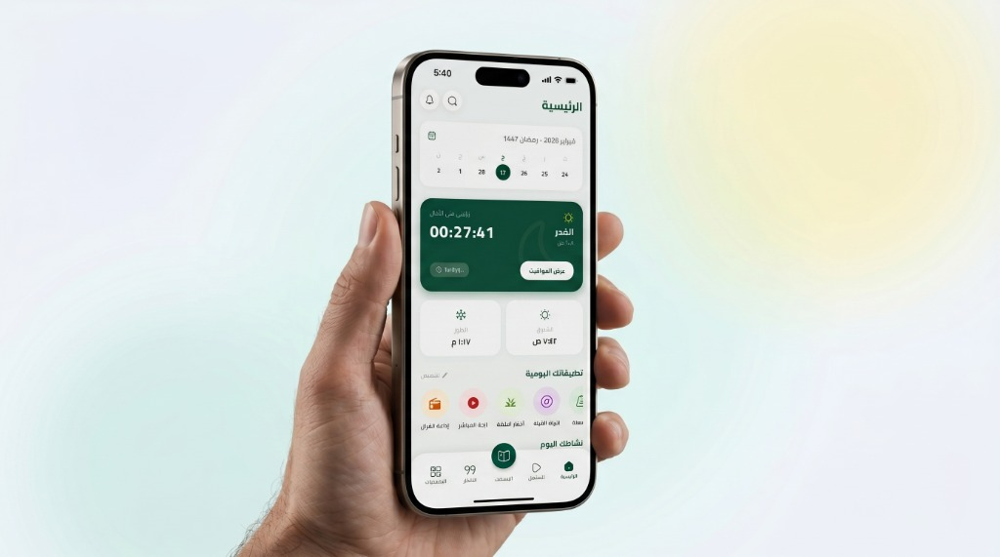
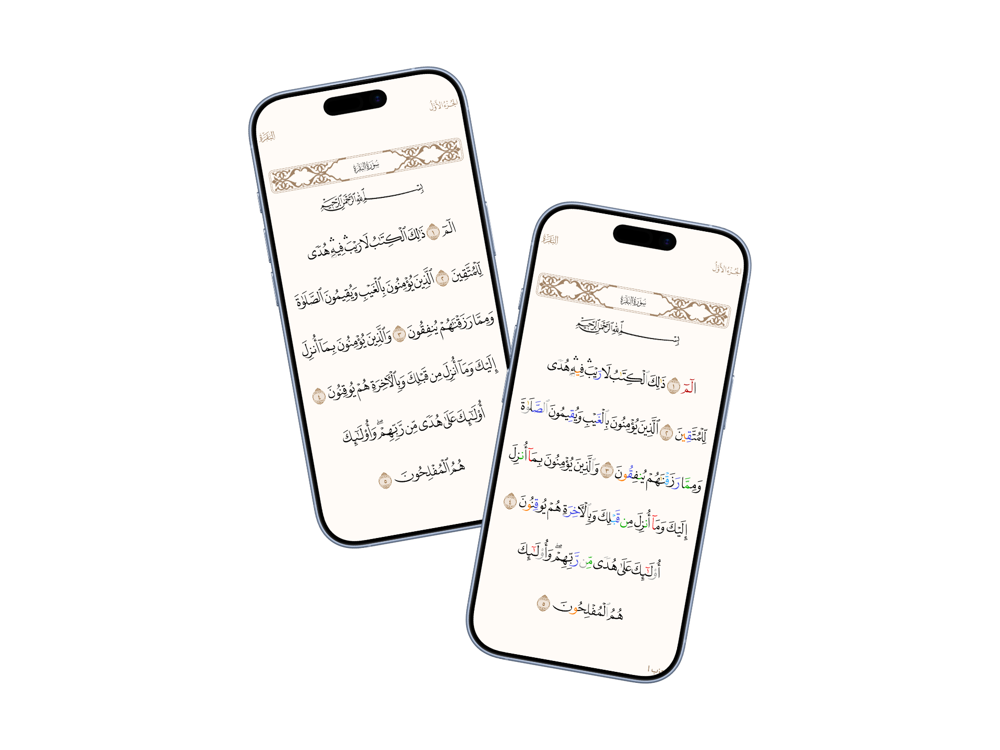
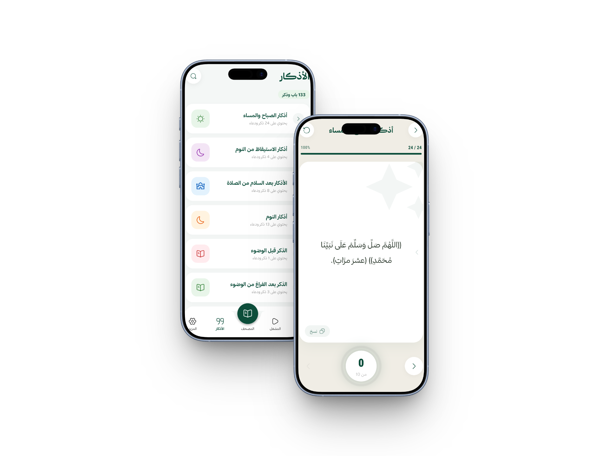
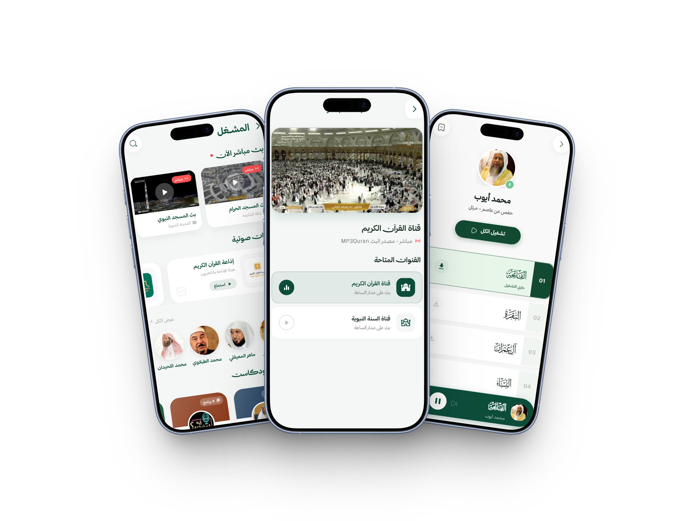

سكينةٌ في كل تفصيلة،
وعبادةٌ بلا مُشتتات.
صُمم تطبيق رَتِّل بعناية ليجمع لك المصحف الشريف، مواقيت الصلاة الدقيقة، والأذكار اليومية في واجهة عصرية هادئة تحترم خشوعك وخصوصيتك.

دقةٌ فلكية أينما حللت
حسابات دقيقة لمواقيت الأذان والإقامة مبنية على إحداثيات موقعك الجغرافي مع تنبيهات ذكية قبل كل صلاة.
صُمم ليُغنيك عن عشرات التطبيقات
توازن مثالي بين ثراء الخصائص وبساطة التجربة، بدون أي إعلانات أو نوافذ منبثقة تقطع خشوعك.
المصحف الشريف بالتجويد الملون
قراءة مريحة للعين بالرسم العثماني الأصيل مع ترميز لوني لأحكام التجويد، وحفظ تلقائي لعلامات التوقف، مع إمكانية الاستماع لكل آية أو عرض تفسيرها بلمسة واحدة.
مؤذن ذكي وتنبيهات مخصصة
اختر صوت المؤذن المفضل لديك، واضبط تنبيهات ما قبل الأذان والإقامة بدقة عالية تتكيف تلقائياً مع سفرك وتغير موقعك الجغرافي في أي مكان بالعالم.
حصن المسلم
أذكار الصباح والمساء والأدعية النبوية مقسمة ومفهرسة بتصميم يسهل القراءة والتتبع اليومي.
مسبحة إلكترونية
عداد تسبيح ذكي يحفظ إحصائيات أذكارك اليومية مع استجابة اهتزازية خفيفة عند كل تسبيحة.
إذاعات القرآن
بث مباشر على مدار الساعة لأشهر إذاعات القرآن الكريم لكبار القراء مع دعم التشغيل بالخلفية.
بوصلة القبلة والتقويم
تحديد دقيق وسريع لاتجاه القبلة، مع تقويم هجري وميلادي متكامل يوضح المناسبات الإسلامية.
واجهةٌ تبعث على الطمأنينة
كل شاشة في رَتِّل صُممت بعناية فائقة لتكون واضحة، سريعة الاستجابة، ومريحة للعين في القراءة النهارية والليلية.
تجربة قراءة تحاكي المصحف الورقي
استمتع بقراءة القرآن الكريم بخط عثماني واضح جداً ومريح للعين، مع دعم كامل للوضع الليلي، وتلوين لأحكام التجويد، وإمكانية الضغط المطول على أي آية للاستماع لتلاوتها أو قراءة تفسيرها فوراً.
- خط عثماني عالي الدقة مع تلوين التجويد
- البحث السريع في الآيات والسور والأجزاء
- حفظ تلقائي لآخر صفحة وصلت إليها

حصن المسلم ووردك اليومي في جيبك
واجهة مخصصة لقراءة أذكار الصباح والمساء بطريقة سلسة وتفاعلية. مع عداد تسبيح ذكي يتناقص تلقائياً عند اللمس، وميزة الاهتزاز الخفيف عند إتمام كل ذكر.
- عداد تفاعلي لكل ذكر مع تنبيه عند الانتهاء
- إمكانية تعديل حجم الخط لراحة العين
- تخريج الأحاديث وفضل كل ذكر

إذاعات القرآن الكريم على مدار الساعة
استمع لأعذب التلاوات من أشهر إذاعات القرآن الكريم حول العالم بجودة صوت نقية. المشغل يدعم العمل في الخلفية بسلاسة حتى أثناء قفل الشاشة أو تصفح تطبيقات أخرى.
- بث مباشر بدون تقطيع على مدار 24 ساعة
- دعم كامل للتشغيل في الخلفية وشاشة القفل
- استهلاك منخفض جداً لبيانات الإنترنت

تلاوات خاشعة لراحة القلوب
جرّب الاستماع مباشرة الآن لأشهر القراء في العالم الإسلامي بجودة عالية.
 خالد الجليل
خالد الجليل
 ياسر الدوسري
ياسر الدوسري
 محمد اللحيدان
محمد اللحيدان
 محمد أيوب
محمد أيوب
 علي جابر
علي جابر
سورة الفاتحة
الشيخ خالد الجليل
كل ما تود معرفته عن رَتِّل
إجابات واضحة ومباشرة لأهم الاستفسارات حول التطبيق وطريقة عمله.
نعم، تطبيق رَتِّل مجاني بالكامل وخالٍ تماماً من أي إعلانات تجارية لضمان راحة المستخدم وتوفير بيئة خاشعة وهادئة أثناء قراءة القرآن والأذكار.
نعم، الميزات الأساسية مثل قراءة القرآن الكريم، حصن المسلم، المسبحة، وحساب مواقيت الصلاة تعمل بالكامل دون الحاجة للاتصال بالإنترنت. ستحتاج للإنترنت فقط عند تشغيل البث الإذاعي أو الاستماع للتلاوات الصوتية السحابية.
نعتمد على أحدث الخوارزميات الفلكية المعتمدة عالمياً (مثل هيئة المساحة المصرية، رابطة العالم الإسلامي، وتقويم أم القرى) لتحديد المواقيت بدقة متناهية بناءً على خط الطول والعرض لموقعك.
ابدأ رحلتك الإيمانية
اليوم مع رَتِّل
تطبيق إسلامي متكامل يرافقك في كل لحظات يومك، صُمم بشغف وإتقان ليكون رفيقك الدائم في الطاعة.
تحميل مباشر للأندرويد (APK)